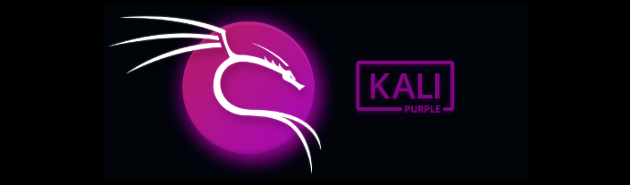
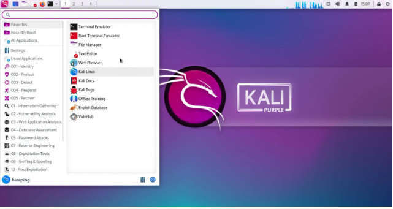

Nuevo Kali Purple para seguridad defensiva
Offensive Security ha lanzado Kali Linux 2023.1, la primera versión de 2023 y el décimo aniversario del proyecto, con una nueva distribución llamada Kali Purple, dirigida a los equipos Blue y Purple para seguridad defensiva.
14 March 2023

Kali Linux es una distribución diseñada para que los hackers éticos realicen pruebas de penetración, auditorías de seguridad e investigaciones de ciberseguridad contra redes.
Con este lanzamiento, el equipo de Kali Linux presenta una variedad de características nuevas, que incluyen:
- Kali Purple para equipos azul y púrpura.
- Más de 100 herramientas defensivas y más documentación.
- Las herramientas se agrupan en el menú según su finalidad/según el dominio del marco de ciberseguridad del NIST (identificar, proteger, detectar, responder, recuperar) en el que se encuentran.
- Un nuevo generador de secuencias de comandos de ataque para ataques automatizados (Kali Autopilot).
- Kali Purple Hub para que la comunidad pueda compartir cosas como scripts de Kali Autopilot para ejercicios de Blue Teaming.
- Una actualización del tema Kali ¡y muchas herramientas más!
Arkime:
Una herramienta de búsqueda y captura de paquetes de código abierto.
CyberChef:
Conocido como la "navaja suiza cibernética", permite analizar, descifrar, desocultar y descodificar datos utilizando una amplia variedad de herramientas (versión online).
DefectDojo:
Herramienta de orquestación de seguridad y correlación de administración de vulnerabilidades de aplicaciones de código abierto.
Dscan:
Un "Nmap distribuido" realizar enumeración de redes.
Kubernetes-Helm:
Una plataforma de administración de paquetes de Kubernetes de código abierto.
PACK2:
Un kit de análisis y descifrado de contraseñas.
Redeye:
Una herramienta destinada a administrar datos durante una operación de pentest de la manera más eficiente y organizada.
Unicrypto:
Interface unificada para realizar tareas de criptografía.

"Estamos haciendo un prelanzamiento preliminar técnico de "Kali Purple. Esto todavía está en pañales y necesitará tiempo para madurar. Pero puede comenzar a ver la dirección en la que se está expandiendo Kali. También puede ser un parte de ayudar a dar forma a la dirección!"
Esta nueva distribución aún se encuentra en las primeras etapas, pero ya incluye más de 100 herramientas defensivas, incluidas Malcolm, Suricata, Arkime, TheHive y Zeek, y un wiki dedicado para ayudarlo a comenzar.
Kali Purple se puede descargar como ISO para sistemas x64/AMD64.
El equipo de Kali advierte que hay numerosos cambios en Python para coincidir con el próximo lanzamiento estable de Debian. Estos cambios pueden causar problemas con PIP, lo que hace que Kali Team introduzca un parche temporal que evita que el administrador de paquetes se rompa en todo el sistema.
Al igual que con todas las primeras versiones del año, Kali ha introducido una actualización de tema que consta de nuevos fondos de pantalla, pantallas de inicio y pantallas de inicio de sesión/bloqueo, incluido el nuevo fondo de pantalla Kali Purple.
Si bien solo compartimos las mejoras destacadas en Kali 2023.1, puede ver el registro de cambios completo en el sitio web de Kali.